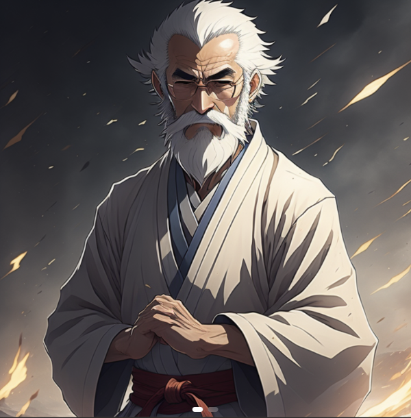

| Linkki | Kieli |
|---|---|
| Ki-Aikido Wikipedian mukaan | Suomi |
| Koichi Tohei Wikipedian mukaan | Englanti |
| Morihei Ueshiba Wikipedian mukaan | Englanti |
| Raneri Varis Wikipedian mukaan | Suomi |
| Ki-Aikido, Shizentai dojo, Helsinki | Suomi |
| Aikidon historia, Meidokan | Suomi |
| Suomen Ki-Aikido yhdistys | Suomi |
| Shinshin Toitsu Aikido, Ki-Soiety | Englanti |
| Europe Ki Society | Englanti |
| KiDo, Way of Natural Relationship | Suomi |
| Ki-Aikido Stavanger, Norja | Englanti |
| Yoshigasakin luentoja | Englanti |
| Koichi Tohei explains the concept of Ki | Englanti |
| Aikidoliitto | Suomi |
| Aikidoliitto, aloittelijan opas | Suomi |
| Aikido-sanasto ja kirjoitusmerkkien selitykset | Englanti |